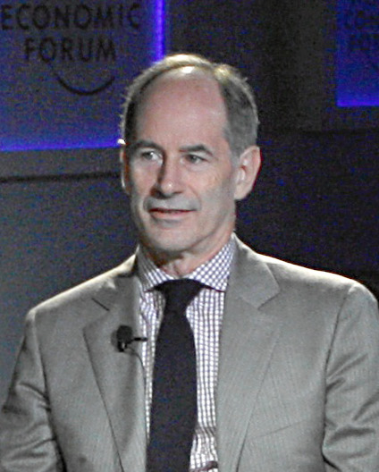
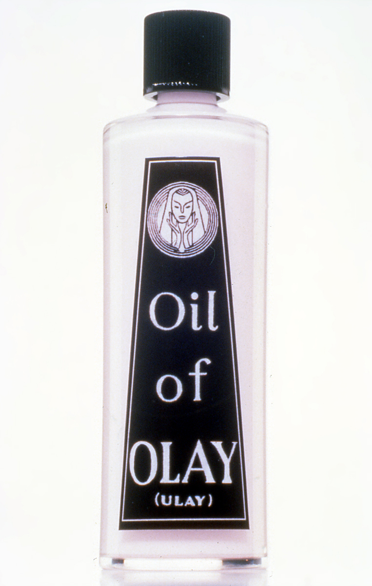
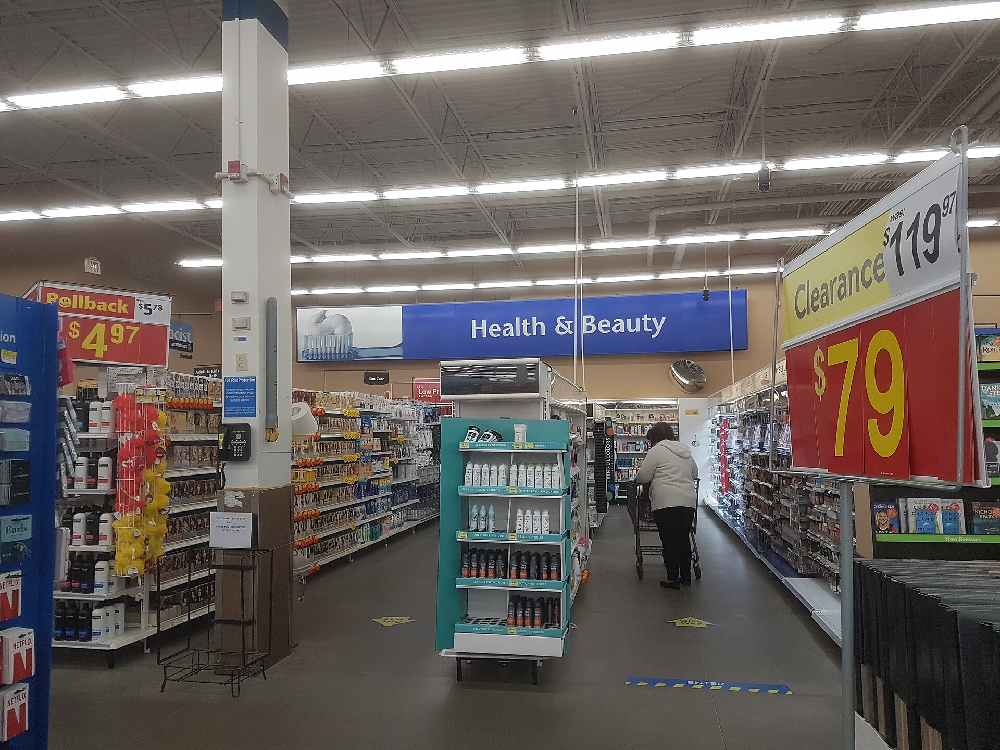
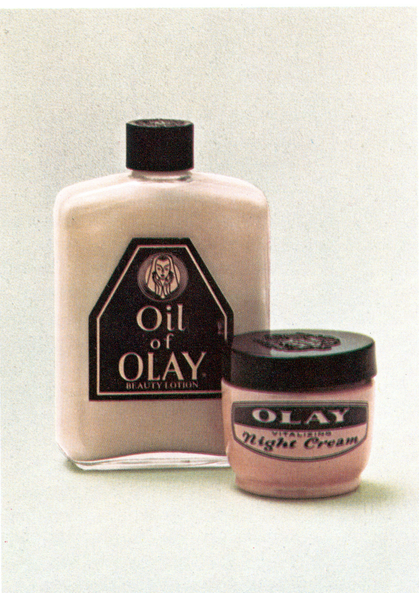

Saturday · Business
: strategy as five integrated choices, not a wish list
and ’s 2013 Press book (and the September 2012 precursor “”) treat strategy as a cascade: , , , , . The “” rebuild is the teaching case; ’ warehouse can versus ’s fragile bag is the where-to-play contrast. Cite only what named public pages state.
{kind=link}
This is a strategy-framework lesson, not a company biography and not a guarantee that writing five cascade boxes raises sales. ( Press, 2013) by and is the named book; the September 2012 essay “” (, , , ) is the named magazine precursor. facts in this capsule are taken from ’s own public accounts — especially his August 2021 Medium essay “Compelling Communication for Your Strategy” and his February 2013 Motley Fool interview — plus the February 2013 Globe and Mail review and the February 2013 Business Insider interview with . Where those public pages disagree on a number (for example ’s Medium essay names women aged 25–49 for where-to-play while his Motley Fool interview says 35 to 50; Medium says the brand grew to a $2.5 billion powerhouse while the interview says almost $3 billion), both figures are flagged rather than averaged into a fake precision. Price points $18.99 for early versus a prior mass-channel top near $4.99 / prior near $3.99–$4.99 are taken from those same accounts. The versus where-to-play contrast is ’s illustration in that Medium essay, not a claim that was designed with the 2013 book vocabulary in 1968. is named where ’s Monitor/ lineage is discussed in the Globe and Mail review; this lesson does not re-teach Five Forces. and from earlier Saturday capsules are named only for overlap and difference. Do not invent internal memos, Exact sales charts not on the cited pages, or retailer co-investment contract terms.
Select any words, or tap a dotted term.
- 1968 Pringles launch launches : a reconstituted chip stacked in a can engineered for warehouse distribution, which later uses as a where-to-play contrast with ’s fragile-bag direct-store delivery.
- late 1990s Oil of Olay stuck ’s public accounts describe as a slowly growing brand around $750 million, outside the top five skin-care brands, with a low mass price and an aging image.
- 2000–2009 Lafley’s first CEO term leads as CEO (first term). Press and later profiles credit the period with large sales, profit, and market-value gains and with as strategy adviser.
- Sep 2012 Bringing Science to the Art of Strategy , , , and , . Possibilities, “,” tests — the scientific-method framing that previews the book.
- 5 Feb 2013 Business Insider + Globe and Mail Max Nisen interviews for Business Insider on why strategy fails (aversion to choice; execution without direction; half-done plans). Harvey Schachter’s Globe and Mail review walks the five questions and the story.
- 2013 Playing to Win published and , , Press. Strategy as five integrated choices; , , Bounty, and other brand stories.
- 27 Feb 2013 Motley Fool interview Brendan Byrnes interviews : cascade told in ’s own voice, including the $3.99-to-$18.99 relaunch and the decade of growth claims he states on the record.
- Aug 2021 Martin’s cascade essay , “Compelling Communication for Your Strategy” (Medium / PTW Practitioner Insights): one-page cascade, 25–49 demographic, $18.99 , / contrast.
Before
When “strategy” is a vision, a budget, and a refusal to choose
In a 5 February 2013 Business Insider interview timed to the release of , , then recently known as ’s highly successful former CEO, named three reasons firms keep mangling strategy. People dislike choices because choices close options and create personal risk. Many managers prefer to believe that better execution alone will win. And large companies often do half the job: a vision statement, some industry slides, an annual plan and budget — “parts of strategy, or they’re the output of strategy but they’re not strategy,” said.
, then dean of the University of Toronto’s and ’s long-time strategy adviser, put the same complaint in plain words in a Motley Fool interview three weeks later: a strategy that is only a compilation of what every direct report wants to do is a plan, not a choice about where to win. An that says “be the best” without a where-to-play and how-to-win is a slogan. The book they published with Press in 2013 is their joint answer: demystify strategy into five questions that must fit together, then force the organization to answer them with enough precision that something plausible is left out.
{kind=link}
Harvey Schachter’s Globe and Mail review the same week traced ’s toolkit partly to ’s teaching via ’s earlier Monitor Consulting work. ’s 1996 essay “What Is Strategy?” already insisted that strategy requires trade-offs and fit among activities. and keep that pressure and give operators a cascade they can draw on one page: , field, advantage, , systems.
The framework
Five choices that constrain each other — or you do not have a strategy
, as the Press book page and ’s interview both state it, is five questions. What is our ? Where will we play? How will we win? What must we have in place to win? What are required to support our choices? ’s later Practitioner Insights essays label the middle pair as an inseparable match: a glamorous where-to-play with no credible how-to-win is wishful; a clever how-to-win aimed at a field you refuse to resource is theater.
is not a laminated mission about caring. In the case describes publicly, the was to build one of the world’s leading skin-care brands that could anchor Beauty — not merely to “satisfy users of pink cream.” forces exclusions: which countries, price bands, channels, and age cohorts you will serve, and which you will not. names the reason those chosen customers would prefer you — product, experience, cost, or a combination that rivals cannot copy cheaply. are the few things the firm must become distinctively good at to deliver that how-to-win. are the budgets, metrics, partnering rules, and talent practices that keep those alive after the launch meeting ends.
The September 2012 essay “,” by , , , and , supplies the method for choosing among cascades. Do not start by arguing from last year’s spreadsheet. Frame a choice, generate genuine possibilities, list for each possibility to work, identify the conditions you doubt most, design tests for those conditions, run the tests, then choose. The scientific move is to test the load-bearing beliefs before you fall in love with a deck. Analysis still matters; it comes after the possibilities are sharp enough to be wrong.

{kind=link}
{kind=link}
’s communication rule, stated in his August 2021 Medium essay, is ruthless on length. If you cannot put the distinctive choices on one cascade page, you probably have a plan of non-stupid activities. Strategy, on this view, is the short list of choices that make you distinctive relative to competitors — including the things you will not do.
The cases
Olay’s masstige cascade, and a chip can that refused Frito-Lay’s field
A.G. Lafley
P&G CEO 2000–2009 (first term)
Co-author of and of the September 2012 essay. In the Business Insider interview: strategy is five integrated choices, and large firms often stop at vision-plus-budget.
Roger L. Martin
Rotman dean; adviser
Co-author; public voice of the cascade details used here (Motley Fool interview; Medium essays).
Jan W. Rivkin
HBS
Co-author of “” (, September 2012).
Nicolaj Siggelkow
Wharton
Co-author of the September 2012 essay.
Gina Drosos
named in Martin’s interview
In the Motley Fool interview names her as then running Skin Care in the nested choice stack under Beauty — an illustration that cascade choices repeat at every level, not a full biography.
in the late 1990s is the stuck brand in ’s public tellings. His August 2021 Medium essay describes a slowly growing brand around $750 million, ranked outside the top five skin-care brands. The Motley Fool interview adds “no-growth, not very high margin,” and a shelf price he remembers as $3.99. The industry’s habitual where-to-play, in that interview, was women 50 and older focused on wrinkles. needed a skin-care brand that could make Beauty credible; buying a hot rival or launching a clean new name were options on the table, the Globe and Mail review notes. The choice they documented later was to rebuild .

{kind=link}
, in ’s Medium cascade, targeted women aged 25–49 noticing first signs of aging rather than the 50-plus cohort the industry overcrowded. (In the Motley Fool interview he says 35 to 50 — same direction, different band; this lesson does not invent a third number.) The channel choice was to stay in mass food, drug, and discount stores — Walmart, CVS, Kroger, and peers in his examples — not to enter prestige department and specialty doors as the primary bet. was “”: combine mass-channel convenience and the absence of pushy counters with prestige-like product quality, packaging, and information. The price tell in his accounts is sharp. Early listed at $18.99 when prior mass skin-care tops sat near $4.99 (Medium) or when itself had been about $3.99 (interview). The marketing promise named in the interview and the Globe review was to fight the “” with better actives — not merely to pinken the old jar.

{kind=link}
and systems followed the pair. ’s Medium essay lists stronger skin-care R&D and outside-lab connections, retailer partnerships to build in-store environments, and beauty-influencer / magazine-editor work unusual for a classic mass brand. had to allow higher trade spending and co-investment than ’s older mass routines assumed. The Globe and Mail review adds Ideo and Saatchi & Saatchi as named partners in the public retelling of packaging and communication work. Outcome claims in ’s own mouth: Medium says became the number-one skin-care brand in the world in the 2000s and a $2.5 billion powerhouse; the Motley Fool interview says almost $3 billion and more than 10 percent annual growth for a decade. Both are his public figures; neither is independently re-audited in this capsule.

{kind=link}
is ’s cleaner where-to-play diagram in the same Medium essay. ’s field was whole chips in fragile bags moved by expensive . , launched by in 1968, was engineered as a reconstituted chip stacked in a robust can that could ride ordinary warehouse distribution. Overlap with ’s system was deliberately small, so the two could coexist for decades. contrasts that with Citrus Hill orange juice in the 1980s, where parked a where-to-play directly on top of Minute Maid’s frozen concentrate and fought a scale war it eventually exited. The lesson inside ’s toolkit: if your where-to-play sits on a rival’s exact field, your how-to-win must be extraordinarily strong; separation is often the cheaper strategy.
{kind=link}
Same time elsewhere
Prestige science beauty in Japan while Olay chose mass
’s cascade chose mass doors on purpose. In the same decades, prestige and “science beauty” were thickening in Japan and across East Asian cities — counters, serums, and clinic-like retail that never pretended to be a drugstore endcap. ’s research campus and urban towers are one visible institutional form of that bet. ’s own line, with deep Japan roots, lived in the prestige logic ’s strategy explicitly did not make primary. Contemporaneous does not mean copied: different where-to-play choices can sit inside one parent company.
.jpg){kind=link}
{kind=link}
Elsewhere in consumer goods, firms were also learning — sometimes the hard way — that overlapping a scaled rival’s exact where-to-play without a crushing how-to-win is expensive. ’s Citrus Hill postmortem is a U.S. juice story; supermarket private-label wars and regional snack challengers elsewhere rhyme without sharing ’s nouns. ’s portable claim is the questions, not Cincinnati’s org chart.
Limits
A cascade can become a slide template that chooses nothing
Any five-box diagram can be filled with mush. “Win with consumers” as an , “everyone who buys soap” as a where-to-play, and “be great at innovation” as a capability fail ’s own distinctiveness test: the opposite is stupid, so the line is not strategy. The story works in teaching because the exclusions are audible — not prestige doors as primary, not the overcrowded 50-plus wrinkle fight as the center, not $3.99 as the brand’s future.
Nested cascades create politics. ’s Motley Fool interview insists every level — corporate, Beauty, Skin Care, , even a country selling team — must make choices. That is empowering in theory and conflicting in practice when a corporate where-to-play starves a brand’s how-to-win. The framework names the tension; it does not dissolve incentive systems.
Public numbers disagree in the details. Treat ’s Medium $2.5 billion and Motley Fool “almost $3 billion,” or 25–49 versus 35–50, as the same speaker’s retellings across years, not as a license to invent a blended “about $2.7 billion among women 30–50.” Strategy teaching that needs fake precision has already left the sources.
Overlap with earlier Saturday capsules is real and partial. rebuilds a value curve and hunts noncustomers; insists on an integrated choice system and on saying no. asks what progress a buyer hires; asks where the firm will play and how it will win. You can use more than one. You should not paste Cirque, a milkshake interview, or a David-and-Goliath underdog story into this lesson as if they were ’s $18.99 test.
After
Practitioner Insights, an expanded edition, and a vocabulary that stuck
After 2013, kept publishing / Practitioner Insights essays that restate for operators — including the 2021 communication piece and the KPI essay that ties trial rates to for to work. Press later issued expanded editions of the book; the five questions remained the spine. Consultancies and strategy blogs adopted “ / ” as everyday nouns, sometimes without the hard exclusions the case depended on.
returned to ’s leadership in a later chapter of company history; that sequel is not this lesson. The portable artifact is plus the 2012 testing discipline: possibilities first, load-bearing conditions next, analysis in service of a choice you are willing to resource — and to explain on one page.
One question
What are you still calling “strategy” because saying no would hurt?
If you stripped your current strategy deck to the five cascade lines, which line still names a field or an advantage you are not actually funding — and which exclusion would make the rest of the page true?
Fun fact
The opposite of “care about customers” is not a strategy
In his August 2021 Medium essay, says listing things whose opposite is stupid on its face — care about customers, hire good people — muddies strategy communication. Strategy, on his account, is the few distinctive choices that let you win relative to rivals, short enough for one cascade page. A hundred-page deck of non-stupid hygiene is a plan, not a strategy.